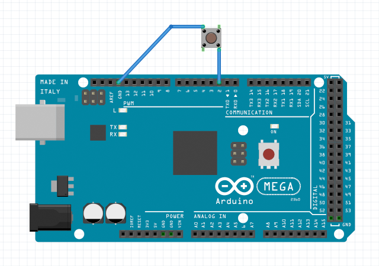
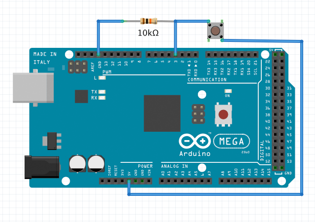

var button1 = new DigitalIn();
// set up a digital input with pin 2 on unit 1
button1.setup(1, 2);
// get the present button state
button1.whenGetValue = function(value) {
alert("button state is " + (value==0 ? "ON" : "OFF"));
};
button1.getValue();
// start a monitor to detect the button state changing
button1.whenUpdateValue = function(value) {
document.getElementById("status").innerHTML = "button state is changed to " + (value==0 ? "ON" : "OFF");
};
button1.startMonitor();

var button2 = new DigitalIn();
// set up a digital input with pin 3 on unit 1
// and enable a de-bouncing filter
button2.setup(
1, // unit 1
3, // pin 3
DigitalInResistor.EXTERNAL, // a pull-down or pull-up resistor is required in the circuit
5, // filter level 5
2000 // sampling interval is 2000 microseconds
);
// get the present button state
button2.whenGetValue = function(value) {
alert("button state is " + (value==1 ? "ON" : "OFF"));
};
button2.getValue();
// start a monitor to detect the button state changing
button2.whenUpdateValue = function(value) {
document.getElementById("status").innerHTML = "button state is changed to " + (value==1 ? "ON" : "OFF");
};
button2.startMonitor();
Pull-up or Pull-down Resistor
An optional parameter resistor can be set for the digital input initialization.
DigitalInResistor.INTERNAL_PULLUP the default mode is for enabling and using built-in pull-up resistor inside the MCU chip.
DigitalInResistor.EXTERNAL is for using an external pull-up or pull-down resistor connected in the circuit.
In this experiment, a pull-down resistor is connected between the input signal pin and GND, In this case, the parameter resistor must be set to DigitalInResistor.EXTERNAL.
With using pull-down resistor, the value of the digital input signal is 1 (high voltage level) when the button state is ON, and the value is 0 (low voltage level) when the button state is OFF. With using pull-up resistor, the value of the digital input signal is 0 (low voltage level) when the button state is ON, and the value is 1 (high voltage level) when the button state is OFF.
Also see the first experiment again, no external pull-up or pull-down resistor connected in the circuit, but instead a built-in pull-up resistor has been enabled in the MCU chip by calling the setup program with DigitalInResistor.INTERNAL_PULLUP (default mode). Therefore the input value 0 is for button state ON, and the input value 1 is for button state OFF.
Using Filter
In order to obtain digital input value of the steady state, the filter should be enabled.
In our experiment, when the button is just pressed and not completely pressed, it often generates a very rapid sequence of on and off signals that is called bouncing. the filter is the routine against the bouncing when detect button state transitions.
Two optional setup parameters filter level and sampling interval need be set for the digital input filter. filter level is the continued sampling times for a steady state readout in one test cycle, and sampling interval is the interval time in microseconds between each sampling. A steady digital input value will be read in success as long as all test sampling value are same in one test cycle.
DigitalIn
setup(unit, pin, resistor, filterLevel, samplingInterval)
initialize a digital input object with a specified pin on a specified unit.
parameter resistor is the configuration for using external or internal pull-up/pull-down resistor. info
filterLevel and samplingInterval is optional parameters to enable a filter of the digital input. info
return value: true if successful, otherwise false.
getValue()
request to get the present state of the digital input signal,
an event callback whenGetValue() will be received later.
return value: the input signal value, number 0 or number 1
startMonitor()
start a monitor to detect the digital input state changing
return value: true if successful, otherwise false.
stopMonitor()
stop the monitor to detect the digital input state changing
return value: true if successful, otherwise false.
Return Value Note:
The function will return a value when your h5control program uses waitRsp mode, but no return value when uses nowaitRsp mode.
whenSetup(done)
receive the callback when setup done. parameter done is true if successful or false otherwise.
whenGetValue(value)
receive the callback to get the present digital input value after called function getValue().
whenStartMonitor()
receive the callback to confirm the monitor is started after called function startMonitor().
whenStopMonitor()
receive the callback to confirm the monitor is stopped after called function startMonitor().
whenUpdateValue(value)
receive the callback when the digital input value is changed after started the monitor.
DigitalInResistor
EXTERNAL
uses an external pull-up or pull-down resistor for digital input
INTERNAL_PULLUP
uses the internal pull-up resistor for digital input
INTERNAL_PULLDOWN
uses the internal pull-down resistor for digital input (no implementation in Arduino)